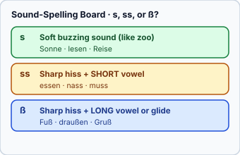

Schreibung von s, ss und ß
Mit einem KI-Tutor lernen
Ein KI-Tutor erklärt dir diese Seite und hilft dir bei den Aufgaben. Wähl deinen Assistenten:
Mit Claude öffnen Mit ChatGPT öffnen Mit Mistral Vibe öffnen
Du nutzt dein eigenes Konto beim Anbieter. Der Assistent ist kein Angebot von lernapps.net: lernapps liefert nur Inhalte und Aufgaben. Die Wahl gilt für alle Seiten, nur auf diesem Gerät.
Straße, Wasser, Sonne: Der Vokallängen-Test für ss und ß
Auf dem Lindenberger Stadtplan entdeckt Peter Schlossstraße und Wasserplatz – mal ss, mal ß! Herr Braun zeigt das klare Entscheidungsschema auf der Laut-Schrift-Tafel: Erst hörst du, ob das s weich summt oder scharf zischt – und beim scharfen s entscheidet die Vokallänge.
Aufgabe
Lösung
In *groß* ist das *o* lang, in *Klasse* ist das *a* kurz. richtige Antwort
Genau! Der scharfe s-Laut folgt bei langem Vokal der Schreibung **ß**, bei kurzem Vokal **ss**.
Am Wortende steht immer **ß**, in der Wortmitte immer **ss**.
Gegenbeispiel: *Fluss* und *muss* enden auf **ss** (kurzer Vokal), während *Straße* in der Mitte **ß** hat (langes *a*).
Nomen haben immer **ss**, Adjektive immer **ß**.
Die Wortart spielt keine Rolle – *Straße* und *Fuß* sind Nomen mit **ß**, *nass* ist ein Adjektiv mit **ss**.
Die Regel für **ss** gegen **ß** hängt allein von der Länge des Vokals davor ab.

© CC0-1.0Peters Laut-Schrift-Tafel: Erst Klang prüfen (summend vs. scharf), dann Vokallänge.
Entscheidungstafel für s, ss und ß
| Schreibung | Regel | Beispiele |
|---|---|---|
| s (weich / summend) | vor Vokal am Wort- oder Silbenanfang (wie Englisch z in zoo) | Sonne, Sommer, lesen, Reise |
| ss (scharf / zischend) | nach kurzem Vokal | Wasser, Klasse, essen, Fluss, muss |
| ß (scharf / zischend) | nach langem Vokal oder Diphthong (ei, au, eu) | Straße, Fuß, groß, heißen, draußen |
Wichtig für das Standarddeutsche
Am Wortende (Haus, Eis) klingt ein einfaches s durch die Auslautverhärtung auch scharf, bleibt aber einfaches s (Verlängerung: Häuser, weiches s). Und ß steht nie am Wortanfang!
Übung: s, ss oder ß?
Aufgabe
Entscheide nach der Vokallänge: ss (kurzer Vokal) oder ß (langer Vokal / Diphthong)?
- street (long a) → Stra…e
- water (short a) → Wa…er
- to be called (diphthong ei) → hei…en
- river (short u) → Flu…
Lösung
- Straße
- Wasser
- heißen
- Fluss
Langer Vokal oder Diphthong → ß (Straße, heißen); kurzer Vokal → ss (Wasser, Fluss).
Aufgabe
Lösung
Richtige Antwort: Die Aussage stimmt nicht.
Falsch! Verlängert heißt es *Häu**s**er* mit weichem, summendem *s*, deshalb bleibt es ein einfaches **s** (*Haus*).
Aufgabe
Tippe das komplette Wort mit ss oder ß richtig ein.
- football / soccer (long u) → …
- to eat (short e) → …
- outside (diphthong au) → …
Lösung
- Fußball
- essen
- draußen
Langes u (Fußball) und Diphthong au (draußen) → ß; kurzes e (essen) → ss.
Fehler gefunden oder eine Idee für diese App?